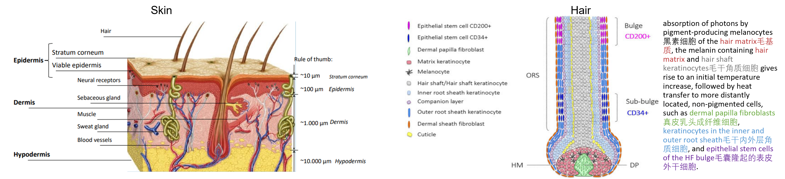
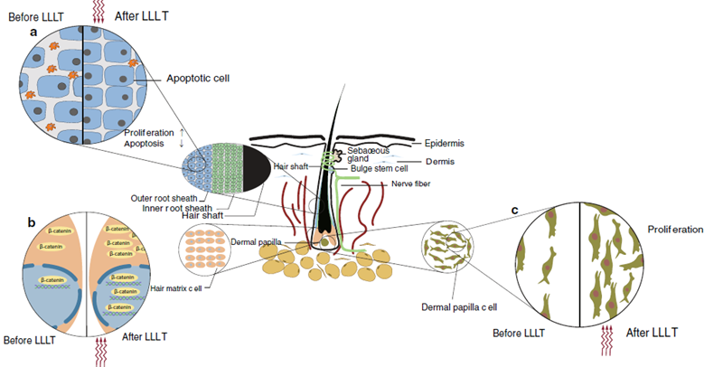
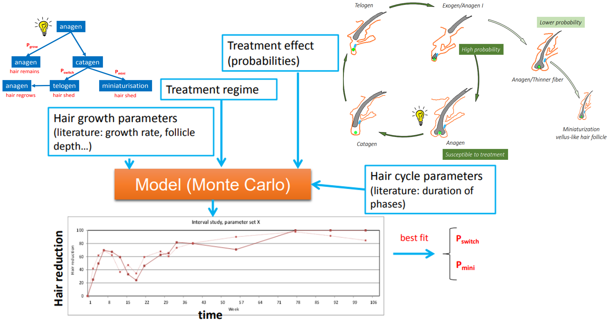
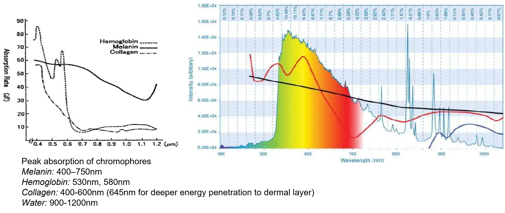
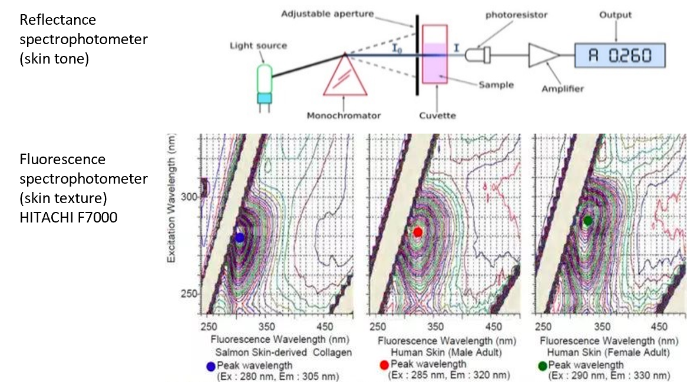

The research project for medical beauty (asethetic dermatology) aims at generating strategic IP for Philips in the personal health business involving skin and hair care, and to achieve a competitive long-term IP position in device-based propositions.
The properties of skin and hair are reviewed, from microscopic to macroscopic scales, and the modification in skin and hair induced by different energy forms, including optical, electrical, acoustic, thermal, chemical, and mechanical energies.
After the strong theorectical foundation for the creation and IP protection being established, innovations in skin and hair care emerge, from prototypes to products.

Fig 5.1 dermatology - skin and hair physiology
As hair loss becomes prominent, many treatment modalities in the market address hair regrowth for consumers, such as hair transplantation, topical treatment, energy-based devices or their combination.
Device-based therapy is of Philips interest. Within this category, treatments based on low-level light therapy (LLLT), LED, radiofrequency technologies are comprehensively investigated in terms of treatment mechanism, efficacy, safety risks etc.
LLLT is selected as the core technology the 1st generation hair booster launched by Philips in 2023 and IP landscape on sense and control, light source innovation, optical design, mechanical design are paved.
Moveable light beads design for personalized treatment is identified as a key differentiation to existing competitor products.

Fig 5.2 LLLT hair booster with moveable light bead design
The evidence-based mechanism of LLLT for hair regrowth can be described as followed:
• Firstly, visible red or near-infrared light is absorbed by endogenous chromophores, leading to the production of ATP and NO as well as the modulation of ROS.
• Secondly, these mobilized molecules subsequently activate some redox-related signaling pathways; cellular responses such as proliferation, migration, and inflammation were regulated.
• Thirdly, these activated cells participate in the regeneration of hair follicles.
The optimal parameters of LLLT are investigated including light source (laser or LED), wavelength, output power, diode numbers, treatment time etc.

Fig 5.3 mechanism of LLLT for hair regrowth
Philips has been working on temporary intense pulsed light (IPL) hair removal for the last fifteen years.
The principle behind IPL technology is to apply low fluence intense pulsed light to the skin which will be absorbed by the melanin (pigment) inside the hair papilla and transformed into heat, which moves the hair from anagen towards catagen phase (from growing to resting) and fall out.
Further optimization of the existing IPL platform requires proposing a treatment regime.
A Monte Carlo method is developed to reveal the underlying mechanism of in vivo-like catagen transition, which consolidates the impact of consecutive treatments on efficacy: persistent hair reduction is explained by incremental induction of catagen in all hair follicles with subsequent follicular miniaturization.
Low fluence pulses resulted in a catagen-like transition, by addressing hair matrix keratinocytes (to induce proliferation arrest and hair follicle shedding).
Hypothetically, repeated treatments using low fluence pulses could result in accumulated impact on dermal papilla or stem cell compartments, leading to high and persistent hair reduction either via hair follicle miniaturization or arrest in telogen phase.

Fig 5.4 modelling efficacy for treatment regime proposal: follicle is likely to recover in the next cycle; subsequent sessions trigger miniaturization
IPL uses a high-intensity light source that emits pulses of polychromatic, noncoherent light in 400-1200 nm spectrum.
With optical filtering techniques, restricted bands of wavelengths can match specific absorptions of chromophores such as melanin, hemoglobin, collagen and water.
To achieve selective destruction of target chromophores, appropriate optical filter, fluence, pulse width, and pulse interval (for multi-pulse) should be considered.
Three skin benefits can be realized by IPL including
• skin tone whitening
• skin texture smoothing
• spot removal
To achieve these benefits with satisfied results, fluence larger than 12 J/cm2 is needed, and the fluence should be delivered to skin in 2-3 pulses in order to lower the safety risks.
UFMEA analysis is also conducted to work out high fluence-assocaited failure modes.

Fig 5.6 IPL technology: principle of selective photothermolysis
Skin reflectance spectrophotometer is used in clinic for quantitative determination of skin spectral colorimetric changes in dermatological disorders and fluorescence spectrophotometer can be used to detect collagen content. Applying both on IPL device as objective quantification of pigment level and collagen deposit can provide customers with additional objective assessment on improvement in skin tone and skin texture, to encourage them by demonstrating effectiveness. The innovation enables on-device photodiode construction to analyze pigment and collagen level to reflect skin tone and skin texture improvement respectively. IPL reflection (incident photons) from treated skin can be directly detected and converted by photodiode to a voltage signal and then amplifier, ADC, to display. A 3D fluorescence spectrophotometer can be used to demonstrate skin texture and gapping scores.

Fig 5.7 melanin level and collagen content determination via on-device spectrophotometer